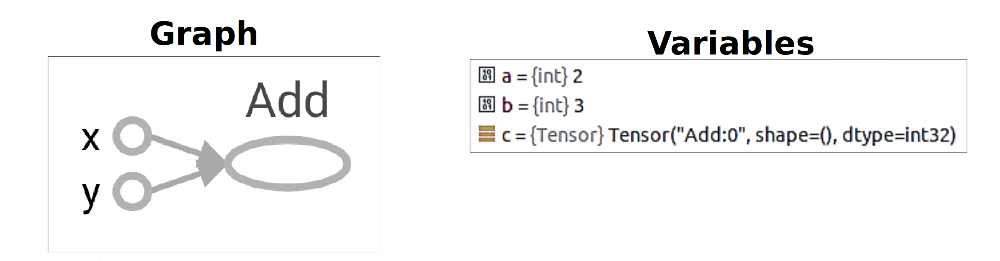

Tensor && flow
- Tensor
✨✨✨You can Edit this Article on Github site本文只是简单 TensorFlow 的一些理解和介绍，并不包含详细的安装、API、以及更多深层内容。
首先简单说一下 标量（Scalar）、向量（Vector）、张量（Tensor）。
下面会以 physical student 和 cs student 两个角度来解释。
Scalar
在物理学角度，标量是遵循简单代数规则的一些量，与坐标系的选取无关。例如，加法，减法等。标量也可以被定义为仅需要识别幅度的量。例如温度，电流等
CS 里面可以简单认为是一个常量（constant）
Vector
物理学角度向量是空间中的箭头，也可以是矢量。
决定一个向量的是它的长度（length）和它所指的方向（direction），而且只要以上特征相同，你一个任意移动一个向量而保持它不变。比如速度和力。而且平面中（平面直角坐标系）的向量是二维的，处于我们生活当中的向量是三维的。
举个例子，一个二维向量 [-2,3] 以平面直角坐标系来表示为：

第一个数代表沿 X 轴走多远，第二个数代表沿 Y 轴走多远。
图中的黄色箭头就是向量，可以看到一个向量都有一个唯一一对对数
而一个三维向量 [2,1,3] 以平面直角坐标系来表示为：
第一个数代表沿 X 轴走多远，第二个数代表沿 Y 轴走多远，第三个数代表沿 Z 轴走了多远
CS 角度向量是一个二维数组（二维）、三维数组（三维）或者说是矩阵。代表有序的数字集合。
线性代数
向量在线性代数当中可以叫做矩阵（matrix），矩阵可以做一些基本的运算，对应的加法和乘法规则是：
- 两个矩阵行列数必须要相同才能进行求和运算。

- 两个矩阵要相乘，前一个矩阵的列数必须要等于后一个矩阵的行数，也可以看成是列的加权求和

至于更多的矩阵求逆、求导超出本文的范畴，请自行学习线性代数。
我们也可以换一种方式来看向量的坐标，把一个 [1,1] 的向量定义为 基向量。
上文的二维向量 [-2,3]，对应的每个坐标可以看作一个为 Scalar（标量）。这个向量可以看作把基向量按照标量的大小进行缩放所产生。-2 代表往右 2 倍，3 代表向上 3 倍
Tensor
Tensor 到底是什么？
在物理学当中，张量是个很复杂的概念，简单来说：张量是在空间的不同方向上测量时具有不同值的量，例如惯性矩。
张量在 CS 眼里其实就是一个多维数组。
简单理解张量是向量和标量的一般形式，我们用一个属性来表示张量：rank，代表张量的阶，也可以叫做维度，或者叫做这是个几维数组：
- 如果张量仅具有幅度而没有方向（即，等级 0 张量），则称为标量或者 rank 0
- 如果张量具有幅度和一个方向（即，等级 1 张量），则称为向量、矢量或者 rank 1
- 如果张量具有幅度和两个方向（即，等级 2 张量），则称为二元或者 rank 2
- …
我们可以想象出这样的各种类型的张量：

具体更多关于张量的解释请看这个视频：What’s a Tensor?，或者关于张量的描述及理解
DataFlow Graphs
根据官方对 Graphs 的解释：
TensorFlow uses a dataflow graph to represent your computation in terms of the dependencies between individual operations. This leads to a low-level programming model in which you first define the dataflow graph, then create a TensorFlow session to run parts of the graph across a set of local and remote devices.
简单来说 TensorFlow 使用数据流图表根据各个操作之间的依赖关系来表示您的计算。关于 Tensorflow 的最大想法是所有数值计算都表示为计算图。 换句话说，任何 Tensorflow 程序的主干都是 Graph。 模型中发生的任何事情都由计算图表示。 这使得它可以用于与您的模型相关的任何事情。
Dataflow 官方认为有很多好处，比如分布式执行、并行、可移植性等等，你也可以在 TensorBoard 上在线可视化编辑 Graph。
流程通俗来讲：我们需要首先在其中定义数据流图（使用 TensorFlow 提供的
operation来实现）并创建session来运行。

比如我们如果实现一个简单的函数：f(x,y)=x+y，TensorFlow 中的 Graph 类似于：

该图由一系列通过边连接的节点组成：图中的每个节点的操作都称为 operation，所以看起来我们是在操作每一个节点。
通俗来讲 Tensor 通过 operation（如数学运算）或生成新的Tensor（如变量和常量）。 每个 operation节点将零个或多个 Tensor 作为输入，并产生新的 Tensor 作为输出。
接下来实现一个稍微复杂的函数：f(x,y)=x^2y+y+2，Graph 将类似于：

Tensor && Flow
可是 Tensor 在实际当中有什么用处呢？
我们知道 Tensor 简单可以理解为是多维数组，严格来讲：如果用数据来表示实物，高纬度（rank）的 Tensor 可以表示更多纬度的实物信息，什么意思呢？
举个例子，我们有这样一组图片需要做 OCR，判断出来那张图片是 cat：
图片拥有什么可用的信息来进行区分呢？简单列一下：
- 宽度
- 高度
- RGBA
而且我们是一组图片，不是单个图片，有可能有一万张（毕竟样本数量越多训练精度越高），怎么处理这些数据呢？
我们可以用 [[rank 3 Tensor],[rank 3 Tensor],[rank 3 Tensor]...]来表示这组数据，也就是一万个 rank 3 的 Tensor，根据这些数据再来进行科学计算、训练精度。
至于为什么叫做 TensorFlow 呢？通过上面的解释应该很清楚了，尤其是 f(x,y)=x+y 的例子，个人理解通俗来讲就是 Tensor 之间的 Flow。
f(x,y)=x+y
下面我们简单的用代码实现一下上面的：f(x,y)=x+y。
因篇幅有限，
Tensor type、Placeholder等概念本文不介绍，只简单说一下operation和session
operation 是实现 Tensor 科学运算的基本方式，在 math_ops.py 当中定义了很多运算规则，常见的add、multiply、pow、multiply等等。
session 是计算 graph 的必要条件。要计算任何内容，必须在 session 中启动图表。 从技术上讲，session 将图形操作放在诸如 CPU 或 GPU 之类的硬件上，并提供执行它们的方法，得到上下文才能运行。
最终代码可以为：
import tensorflow as tf
x = 2
y = 3
with tf.Session() as sess:
# 加法运算
add_op = tf.add(x, y, name='Add')
print('sess.run(add_op) return value', sess.run(add_op))
最终输出sess.run(add_op) return value 5，并且对应的 Tensorboard 生成的图为：
